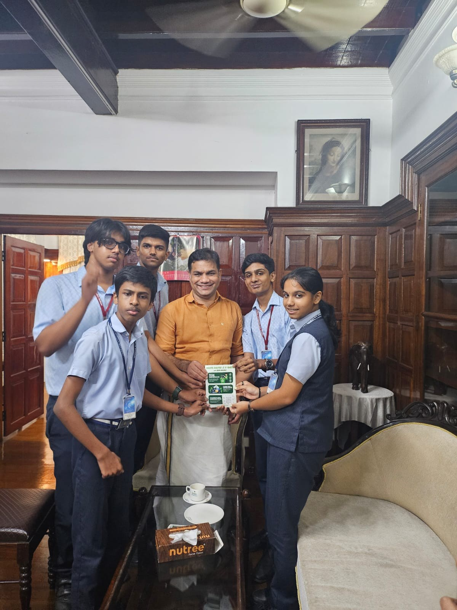

OUR WORK
Awareness.
Action.
A second life.
NOVARA is a student-led platform spreading awareness of responsible e-waste management. Our work connects learning, outreach and a proposed collection system.
Try Encycle BankENCYCLE BANK · CONCEPT DEMONSTRATION
From awareness to collection.
Explore the proposed ATM-style kiosk: enter an OTP on its OLED touchscreen, select your device type and deposit it. This is a simulation; no real OTP, server record, notification or collection is created.
NOVARA ENCYCLE BANK
Learning through doing.



In motion.
Original videos supplied by the team. Play to view; no automatic playback.